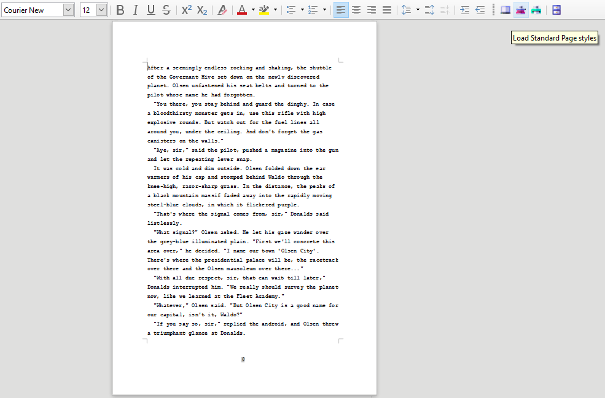
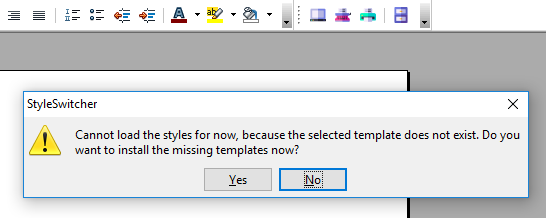

Project homepage > Instructions for use
This extension requires three document templates to be located in the template folder of your user profile:
Unless you provide them yourself, StyleSwitcher can install supplied template documents on demand (see below). Existing template documents will not be overwritten. After installation, each template document can be automatically loaded to customize the language, paper size, etc.
After installing the extension and restarting the office application, you will see a small toolbar.
You can dock it to a suitable place on the user interface.
There are four buttons: three for preset document templates, and one for a file selection dialog that lets you load the style sheets of any document template.
The toolbar button with the gray screen icon loads the styles of the Default.ott document template, which are optimized for easy-to-read screen display. The margins are narrow, there are no headers and footers, and hyphenation is turned off.

The button with the red typewriter symbol loads the styles of the document template StandardPages.ott , which corresponds to the usual specifications of publishers for manuscripts. With a fixed-width font, it allows a standardized estimate of the total amount of text.

The button with the green printer icon loads the styles of the Printout.ott document template, which provides a readable and economical printout. The text is justified with hyphenation, the pages are numbered, the margins meet aesthetic criteria.
The button with the blue file cabinet icon opens a file selection dialog. This allows you to select a template file whose styles are to be applied. Be sure to use the correct file type (file extension “.ott”).

If you try to load styles from a template that does not exist in your user profile’s template folder, StyleSwitcher cancels the operation and prompts you to install the template:

Clicking on Yes will start the installation routine (see below). Clicking on No will finish the current StyleSwitcher operation.
In the Tools section of the main menu, there is a StyleSwitcher submenu under Add-Ons .

In addition to the toolbar functions and a Help entry, here you will find two commands:
Install missing template documents and Unlink associated template .
This will prompt you to install the template documents included with the StyleSwitcher extension. As mentioned before, existing templates will not be overwritten. So if you want to renew a template, you first must delete your file in your user profile’s template folder.
Anyway, you will see a message before StyleSwitcher installs files:
If you click on the OK button, StyleSwitcher will install all missing template documents. If the templates already exist, StyleSwitcher will cancel the Operation and show a message.

If you click on the Cancel button when prompted for installation, the operation will be canceled.
For each new document you will be asked whether you want to edit it for customization now.

If you click on the No button, the new template document will be saved “as is”. In general, this means that the document is set to “Windows” system fonts, and A4 paper size.
If you click on the Yes button, StyleSwitcher will immediately load the template document.
If your printer paper has a format other than A4, you can make the necessary settings in Writer’s Page Styles section.

Make sure to save and close all template documents before using the StyleSwitcher toolbar.
Note: You can do customizations at any time later by loading the corresponding template document for editing.
You may need this operation if you have created your document based on a document template, or if you have used the TemplateChanger extension to make an assignment that should no longer apply. After having unlinked the initial template, you will no longer be prompted for template updates in case they have been modified.
Note: this command is not used to undo an action of the StyleSwitcher extension.
In the Help section of the main menu, there is a StyleSwitcher help submenu.